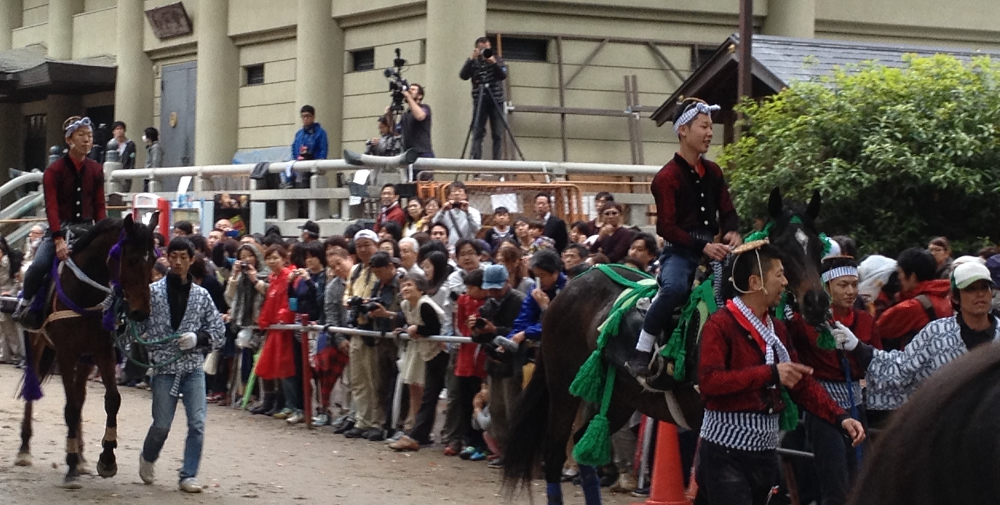
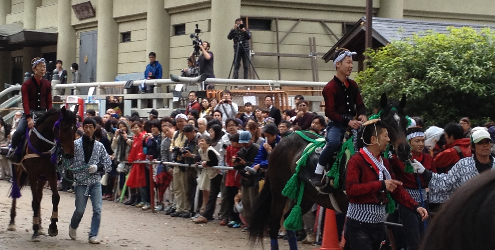

Kyoto (京都, Kyōto) served as Japan's capital and the emperor's residence from 794 until 1868. It is now the country's seventh largest city with a population of 1.4 million people and a modern face.
Over the centuries, Kyoto was destroyed by many wars and fires, but due to its historic value, the city was dropped from the list of target cities for the atomic bomb and spared from air raids during World War II. Countless temples, shrines and other historically priceless structures survive in the city today.
So now you know where you'll be this year holiday !

Kyoto contains roughly 2,000 temples and shrines. About 20% of Japan's National Treasures and 14% of Important Cultural Properties exist in the city proper.
The UNESCO World Heritage Site Historic Monuments of Ancient Kyoto (Kyoto, Uji and Otsu Cities) includes 17 locations in Kyoto, Uji in Kyoto Prefecture, and Ōtsu in Shiga Prefecture. The site was designated as World Heritage in 1994.

Toji is an old temple with Japan's tallest wooden tower.
Nijo Castle is an old flatland castle and the residence of the shogun.
Sento Palace is a beautiful residence with a mesmerizing garden.
Toei Eigamura is a drama film set and also a theme park.
Kyoto Aquarium is a modern aquarium located in the west of Kyoto Station.
The National Museum present exhibitions on history and art.

The Aoi Matsuri (葵祭?), or "Hollyhock Festival," is one of the three main annual festivals held in Kyoto, Japan, the other two being the Festival of the Ages (Jidai Matsuri) and the Gion Festival. It is a festival of the two Kamo shrines in the north of the city, Shimogamo Shrine and Kamigamo Shrine. The festival may also be referred to as the Kamo Festival. It is held on 15 May of each year.
There are two parts to Aoi Matsuri: the procession and the shrine rites. The procession is led by the Imperial Messenger. Following the imperial messenger are: two oxcarts, four cows, thirty-six horses, and six hundred people, all of which are dressed in traditional Heian period apparel decorated with aoi leaves.

The procession starts at 10:30 on May 15 and leaves the Kyoto Imperial Palace and slowly works its way towards the Shimogamo shrine and finally the Kamigamo shrine.[5] When they finally arrive at both shrines, the Saiō-Dai and Imperial Messenger perform their rituals.
The Saiō-Dai simply pays her respects to the deities and the Imperial Messenger intones the imperial rescript praising the deities and requesting their continued favor.
 

The significant point of this Festival is Kakeuma-Shinji (acrobatic horseback riding) And this festival has around 1200 years old. It is chosen as Folk Custom Intangible Culture Asset of Kyoto City. Beside key event, you can also check some other events from from May 1st to May 5th.
The key events are warriors’s processions through town from 9:00 and Kakeuma-Shinji will be started from 13:00 until 15:00 on May 5.
Location: Fujinomori-jinja Shrine and some others shrine - Kyoto.
Access: get off at JR Nara Line to Fujinomori Station and then walk around 5 minutes or take Keihan Honsen Line to Sumizome Station and then walk around 7 minutes.
Japanese cuisine has developed through centuries of social and economic changes, and encompasses the regional and traditional foods of Japan. The traditional cuisine of Japan (washoku or 和食) is based on rice with miso soup and other dishes, with an emphasis on seasonal ingredients. Side dishes often consist of fish, pickled vegetables, and vegetables cooked in broth. Fish is common, often grilled, but also served raw as sashimi or in sushi. Seafood and vegetables are also deep-fried in a light batter as tempura.

Sushi (すし, 寿司, 鮨?) is a food preparation originating in Japan, consisting of cooked vinegared rice (鮨飯 sushi-meshi?) combined with other ingredients (ネタ neta?) such as raw seafood, vegetables and sometimes tropical fruits. Ingredients and forms of sushi presentation vary widely, but the ingredient which all sushi have in common is rice (also referred to as shari (しゃり?) or sumeshi (酢飯?)).

Ramen (ラーメン) is a Japanese noodle soup dish. It consists of Chinese-style wheat noodles served in a meat- or (occasionally) fish-based broth, often flavored with soy sauce or miso, and uses toppings such as sliced pork (チャーシュー chāshū?), dried seaweed (海苔 nori?), menma (メンマ menma?), and green onions (葱 negi?). Nearly every region in Japan has its own variation of ramen, from the tonkotsu (pork bone broth) ramen of Kyushu to the miso ramen of Hokkaido.
Tempura (天ぷら or 天麩羅 tenpura, [tẽ̞ɴpɯᵝra]) is a Japanese dish of seafood or vegetables that have been battered and deep fried. Various seafood and vegetables are commonly used as the ingredients in traditional tempura. The most popular seafood tempura is probably ebi (shrimp) tempura.

Sukiyaki (鋤焼, or more commonly すき焼き) is a Japanese dish that is prepared and served in the nabemono (Japanese hot pot) style. It consists of meat (usually thinly sliced beef) which is slowly cooked or simmered at the table, alongside vegetables and other ingredients, in a shallow iron pot in a mixture of soy sauce, sugar, and mirin. The ingredients are usually dipped in a small bowl of raw, beaten eggs after being cooked in the pot, and then eaten.
The traditional arts of dyeing and weaving are alive today in Gujo Hachiman. The cold clean water of the Yoshida River has allowed artists to dye threads and fabrics, and inspired beautiful works of art and clothing.